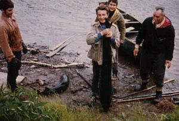

Bienvenue sur la page personnelle d' un pêcheur
qui aime mieux montrer ses photos
que de conter des histoires..

Esturgeons pris au lac Caopatina en 1968.
Si vous cliquez ici vous aurez une meilleure idée
de la grandeur nature...
Pour d' autres histoires de pêcheurs le chemin est ici..